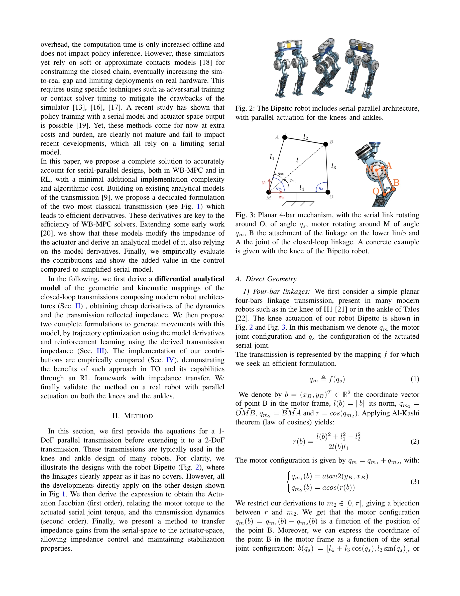
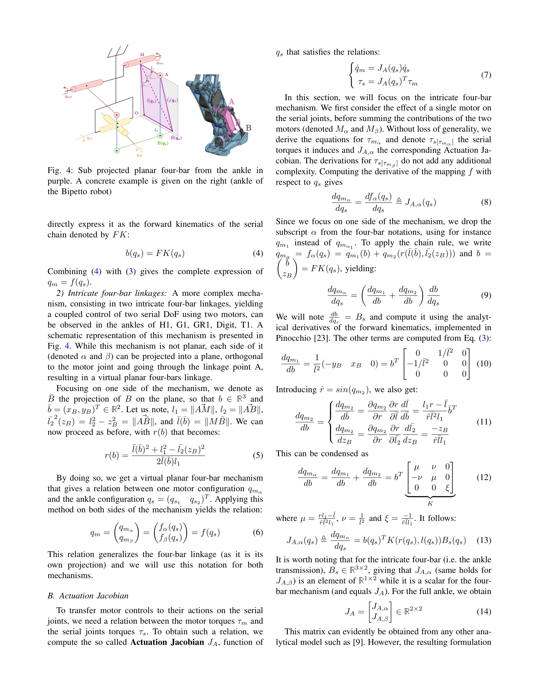

저자: Victor Lutz, Ludovic de Matteis, Virgile Batto, Nicolas Mansard | 날짜: 2025-03-28 | URL: https://arxiv.org/abs/2503.22459
Fig. 3: Planar 4-bar mechanism, with the serial link rotating
Cassie 영감의 휴머노이드 로봇에 사용되는 병렬 구동 메커니즘에 대한 미분가능한 해석 모델을 제시하여 정확한 비선형 전달 특성을 효율적으로 계산 가능하게 한다.

Fig. 2: The Bipetto robot includes serial-parallel architecture,

Fig. 4: Sub projected planar four-bar from the ankle in
총평: Parallel actuation 메커니즘의 정확한 모델링을 minimal하고 미분가능한 형식으로 구현하여 현대 제어 및 학습 알고리즘에 실용적으로 통합 가능하게 한 의미 있는 기여다. 하드웨어 검증으로 이론의 실효성을 입증했으나, 보다 일반적인 mechanism 설계에 대한 확장성 검증이 추가로 필요하다.